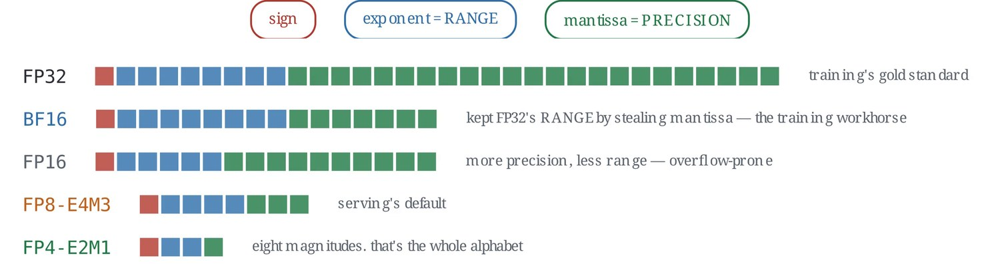
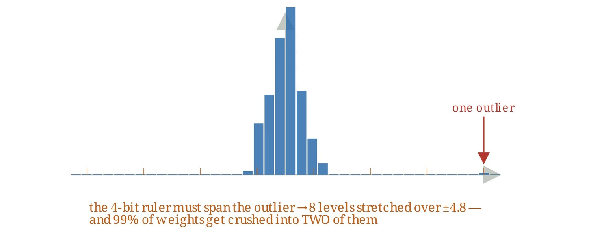
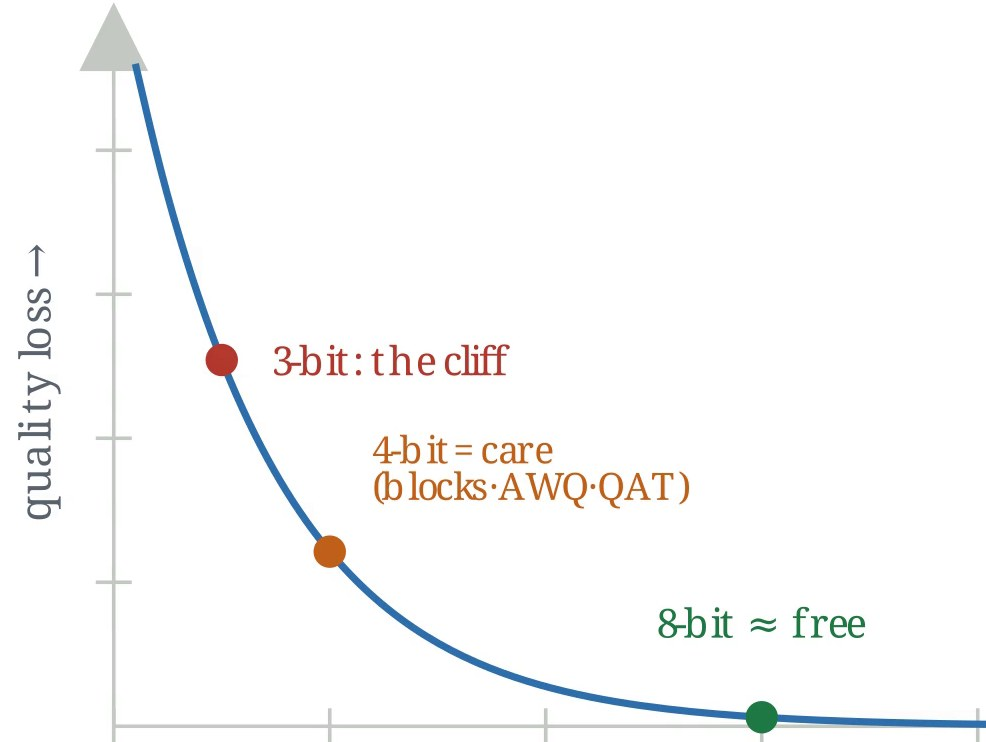
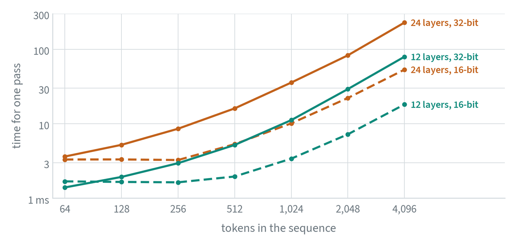
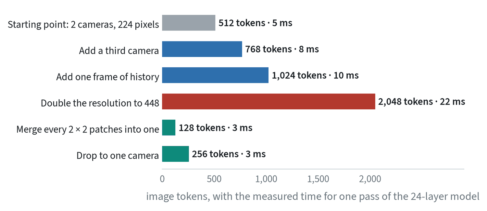
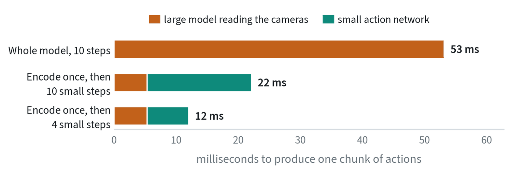
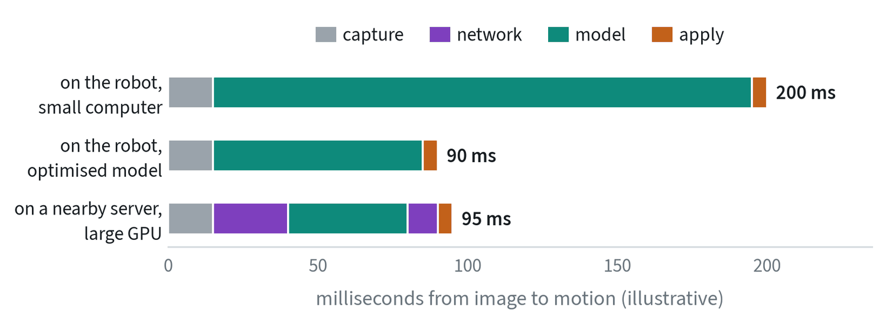
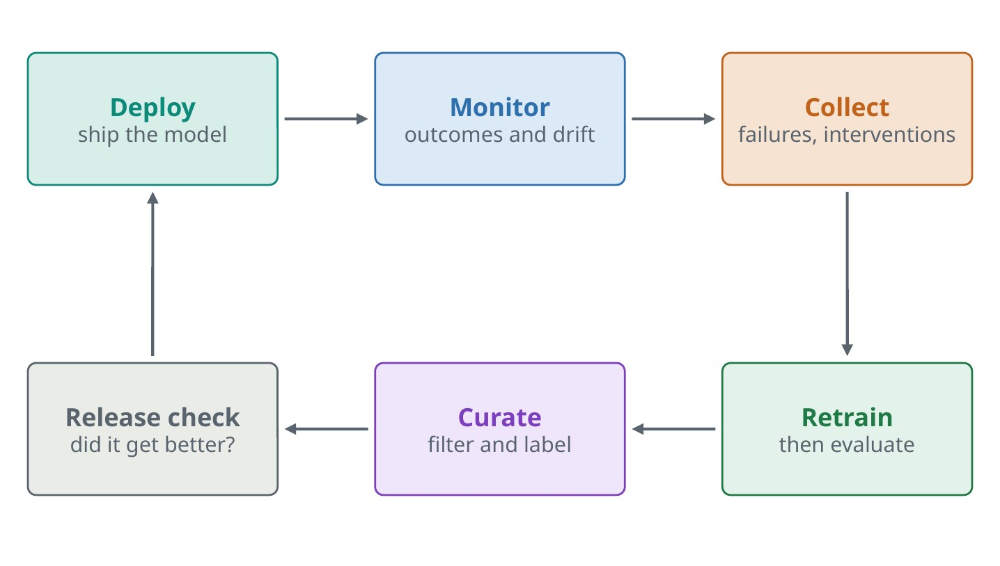

Making the model fit
A model that needs a data-centre GPU is no use on a battery-powered robot. There are three ways to shrink one.
- Quantisation. Store and compute with fewer bits per number. It is the first tool to reach for.
- Pruning. Remove weights, attention heads or whole layers that contribute little.
- Distillation. Train a small student to copy a large teacher’s outputs.


Sixteen-bit inference is usually free in practice. Eight-bit integers need representative calibration data to choose their ranges. Below that, care is needed, because of how low-bit scales behave.




Always re-measure task success afterwards. A tiny numerical error in each action can accumulate over hundreds of control steps, so compare closed-loop success, not just how far the outputs moved. On robot accelerators the supported operations and precisions are fixed by the hardware, so check them early.
The latency budget
The model’s answer always arrives late. The design goal is to make that harmless.

In this example the images are encoded once and cached, the small action expert then runs ten short steps, and the result is fifty actions: one second of motion at 50 Hz, produced by 73 milliseconds of computation. The next chunk is ready long before the current one runs out.
- Chunk and overlap. Each call returns a stretch of motion, so the next call can run while this one executes.
- Asynchronous inference. Motion never pauses to wait for the model.
- Real-time chunking. Plan the new chunk knowing it will arrive late, and blend it into the actions already committed.
- Split the work. Run the large model a few times a second and only the small action network every cycle.
Latency is a correctness issue. An action computed from an old image is an action for a world that no longer exists.
Calculating latency: count the tokens
The time from an image to an action is the sum of four things: reading the sensors, preparing the inputs, running the model, and sending the command. The model usually dominates, and its time can be estimated before anything is built.
Model time = number of passes × time per pass. The time per pass is set mainly by how many tokens are in the sequence, so the first step is to count them. For images:
tokens = cameras × frames × (height × width) ÷ (patch size)²
A 224-pixel image cut into 14-pixel patches gives 16 × 16 = 256 tokens. Two cameras give 512. Models that work on compressed video divide further, by the autoencoder’s compression in space and in time. Add the instruction (5 to 30 tokens), the body state (one), and the action tokens being generated.


Three things can be read off this measurement. Below a few hundred tokens the time is flat: fixed overheads dominate, and trimming tokens buys nothing. Above that it climbs faster than the token count, because attention compares every token with every other. Going from 2,048 to 4,096 tokens multiplied the time by about 2.5, not 2. And switching from 32-bit to 16-bit numbers made the large model three to four times faster at every length.
The knobs that control it


| Knob | Effect on time | What it costs |
|---|---|---|
| Number of cameras | Tokens grow in proportion | Viewpoints, and with them occluded detail |
| Image resolution | Tokens grow with the square | Small objects and fine detail |
| Patch size, or merging tokens | Tokens fall with the square | Fine detail |
| Frames of history | Tokens grow in proportion | Motion cues and short-term memory |
| Compression (video models) | Fewer tokens per frame | Detail the autoencoder cannot rebuild |
| Refinement steps | Passes grow in proportion | Sample quality, below a handful of steps |
| Depth and width | Time grows with depth, and faster with width | Capability |
| Number precision | 16-bit was 3 to 4 times faster here; 8-bit goes further | Accuracy, if calibration is poor |
| Caching | The cameras are encoded once, not once per step | Nothing, if the architecture allows it |
| Chunk length | More actions per call, so fewer calls | Reactivity |


The last figure is the argument for the design described in robot policies today: a large model that reads the scene once, and a small one that turns it into actions over several quick steps. Two knobs, caching and step count, cut the time by more than four with the same large model.
Model time is not the same as reaction time. A robot that executes half a second of a chunk before planning again can take up to half a second, plus the model time, to respond to something new. The note on senses shows what that delay means for a slipping object. Shortening the stretch that is executed before re-planning is a latency knob too, and often the largest.
Where the model runs


| On the robot | On a nearby server | |
|---|---|---|
| Compute | Limited by power, weight and heat | As large as needed |
| Latency | Fixed and predictable | Depends on the network, and varies |
| If the link drops | Nothing changes | The robot must stop safely |
| Updating the model | Every robot is updated | One place to update |
Many systems split the work: the large, slow model runs wherever compute is available, and the small, fast action network runs on the robot, so that a network stall degrades the plan and not the motion.
Export and runtimes
The framework a model is trained in is rarely what runs on the robot. The model is exported to an exchange format and then compiled by a runtime built for the target chip. Three problems come up every time.
- Unsupported operations. The runtime may not implement every layer. Find out before the architecture is final.
- Fixed shapes. Many runtimes want the batch size, image size and sequence length fixed at compile time.
- Numerical differences. Compare the exported model’s outputs with the original on the same inputs, then compare task success.
Then profile each stage separately: image capture, preprocessing, the vision encoder, the action network, and sending the command. The slowest stage is often not the one expected, and preprocessing on the CPU is a frequent culprit.
The data flywheel


A deployed robot meets situations the training set never covered. Monitor task outcomes, drift in the inputs such as new lighting or a moved camera, signals from the model such as low confidence, and system health such as latency. Then capture what went wrong and feed it back.
Failures and human interventions are the most valuable episodes to keep. The moment an operator takes over marks exactly where the policy was wrong, and the correction is a demonstration of how to recover. The team that turns field failures into training data fastest improves fastest.
Versions and rollback
What runs on a robot is more than the weights. A release is the weights, the normalisation statistics, the preprocessing, the action convention and the controller settings together, and a mismatch between any two of them is a failure that looks like a bad model.
- Version them as one unit. Record which release produced every episode, so a change in success can be traced.
- Roll out in stages. One robot, then a few, then the fleet, with success compared against the previous release at each step.
- Keep the way back. The previous release stays installed, and returning to it is one command.
Common mistakes
- Checking output difference only. After quantising, measure whether the task still succeeds.
- Measuring the model alone. The camera, preprocessing and communication all spend the budget too.
- Shipping without monitoring. Then the first sign of a problem is a complaint.
Terms
- Quantisation
- Representing numbers with fewer bits.
- Calibration
- Choosing the numeric ranges for low-bit formats from sample data.
- Latency
- The delay between sensing and acting.
- Drift
- Deployment inputs slowly departing from the training data.
- Runtime
- The software that executes an exported model on a specific chip.
- Release
- The weights plus every setting needed to run them, versioned together.
- Latency
- The delay between an observation and the action that responds to it.
- Sequence length
- The number of tokens the model processes in one pass.